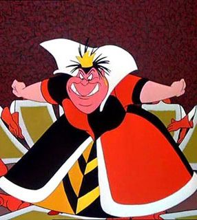
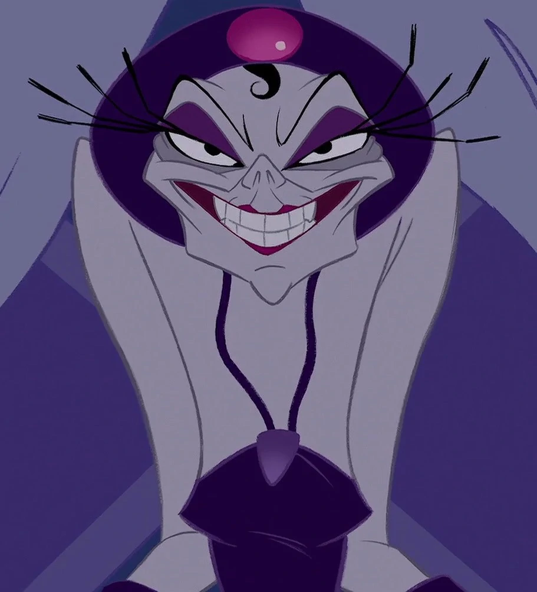

1.Scar

Scar es el villano principal de la película "EL REY LEÓN". Era el segundo hijo de Ahadi y Uru, que fueron Rey y Reina de las Tierras del Reino, el hermano menor de Mufasa y el tío de Simba. Es malvado, mentiroso, cruel, sádico, celoso, hambrientos de poder, manipulador, inteligente, egoista, abusivo, frio, vanidoso, arrogante, misterioso, megalomaníaco, pomposo, asesino, cobarde, resentido, egoísta, codicioso, obsequioso, tiránico, carismático, sarcástico, astuto, malhumorado, perezoso, traicionero, oportunista, tranquilo, elegante, seductor, dramático y despiadado
MAQUILLAJE SCAR2.Úrsula
Ursula es la villana principal de la película "LA SIRENITA".Por sus crímenes y maldades fue exiliada personalmente por El Rey Tritón pero siguió haciendo tratos clandestinos a Sirenas y Tritones convirtiéndolos en algas mutantes haciéndolos sufrir durante mucho tiempo. Es vengativa, planificadora, traidora, manipuladora, inteligente y hambrienta de poder
MAQUILLAJE ÚRSULA3.Maléfica
Maléfica es la villana principal de "LA BELLA DURMIENTE". Ella es la personificación del mal, y es responsable de hacer caer toda desgracia sobre el reino del Rey Stéfano. Maléfica posee grandes poderes. Siempre tiene en sus manos un bastón, con una bola de cristal en uno de sus extremos. Es misteriosa, vengativa, arrogante, poderosa, manipuladora, estricta y malvada
MAQUILLAJE MALÉFICA4.Jafar
Jafar es el villano principal de la película Aladdin. Es considerado uno de los villanos Disney más malvados. Jafar es cruel, mentiroso, manipulador, malvado, egoista, hambrientos de poder e insano
MAQUILLAJE JAFAR5.Cruella de Vil
Cruella De Vil es la principal antagonista de la película de animación de Disney de 1961, 101 Dálmatas.Es una excéntrica heredera obsesionada con la moda que desea utilizar las pieles de 99 cachorros de dálmata para crear un abrigo manchado de piel. Cruela es entre otas cosas mala, grosera, irrespetuosa, sedienta de atención, presumida, soberbia, calculadora, antipática, codiciosa y egoísta.
MAQUILLAJE CRUELLA DE VIL6.Capitán Garfio

Captain James Hook (Capitán James Garfio en español) es el villano principal de la película Peter Pan. Él es parte del grupo de villanos de Maléfica, es cruel, vengativo, despiadado, traicionero, manipulador, planificador, codicioso, divertido, arrogante, asesino, abusivo, sadico, cobardemente. Su objetivo es acabar con peter pan.
MAQUILLAJE CAPITÁN GARFIO7.Madre Gothel
Madre Gothel es la villana de la pelíula de Rapuncel. Es una anciana, malvada que un día encontró una flor y descubrió que al pronunciar delante de la flor la canción "Flower Gleam and Glow", podía mantenerse joven durante cientos de años. Y la escondía para que nadie la encontrase.Su objetivo es impedir que Rapunzel salga de la torre para mantenerse joven por toda la eternidad.
MAQUILLAJE MADRE GOTHEL8.La reina de Corazones
La reina de corazones es la principal villana de Alicia en el pais de las maravillas. Ella gobierna con mano firme el País de las Maravillas desde su castillo. Aquel que ose desobedecer sus órdenes será decapitado automáticamente por su ejército de Naipes cuando ella grita la orden: "¡Cooooortenle la cabeza!". Es cruel, presumida y maleducada.
MAQUILLAJE REINA DE CORAZONES9.Hades
Hades es el villano de la película Hércules. Tiene fuego en vez de pelo, y tiene envidia de su hermano Zeus, el líder de todos los dioses. Su objetivo es ser el Dios Soberano y superar a su hermano Zeus pero para ello debe deshacerse de Hércules. Es divertido, chiflado, envidioso, planificador, abusivo, malvado, cruel y egoista.
MAQUILLAJE HADES10.Yzma
Yzma es la villana de la película El emperador y sus locuras, es una de las más malvadas villanas Disney, pero al mismo tiempo, es un personaje cómico y excéntrico que consigue ser adorada por el público a pesar de su papel de mala. Es malvada, planificadora, vengativa, divertida, egoista y hambrienta de poder. Su objetivo es acabar con Kuzco y ser emperatriz.
MAQUILLAJE YZMA